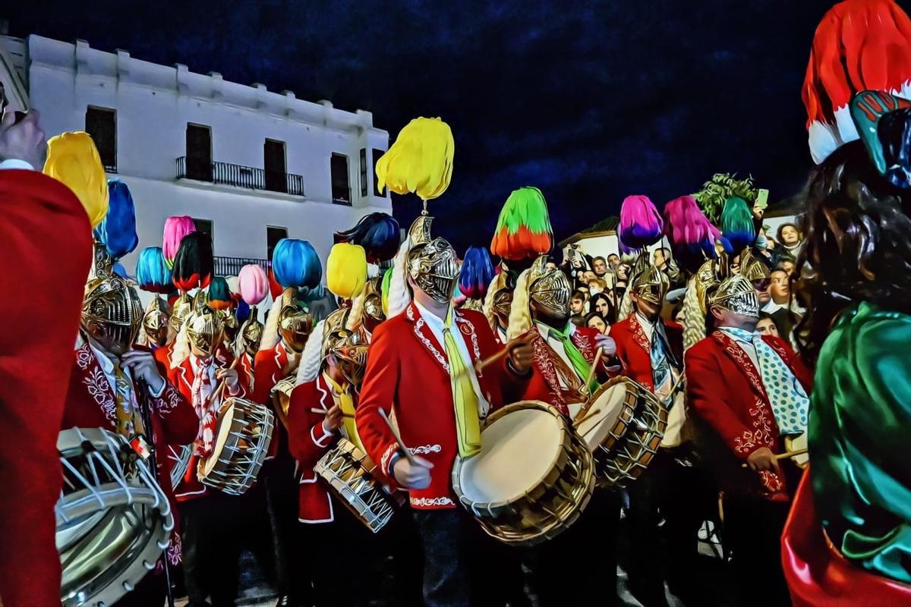

El Cascamorras de Baza y Guadix
Baza y Guadix (Granada · Andalucía) · Tradición etnográfica · "Lleva más de cinco siglos intentándolo. Nunca lo ha conseguido."
- La Virgen de la Piedad es la patrona de Baza y objeto de devoción cotidiana para los bastetanos. La rivalidad con Guadix se juega en el terreno festivo, y la imagen que está en el centro del pleito tiene un peso religioso que se nota en cuanto acaba la carrera.
- El papel lo asume cada año un vecino de Guadix al que elige la Hermandad. Dos horas y media corriendo cuatro kilómetros bajo la pintura, con la porra y la bandera en las manos, es un esfuerzo físico considerable que se asume por devoción.
- Cuando el Cascamorras llega a la Merced, se limpia, se cambia de ropa y reza a la Virgen en un acto íntimo. Ese cierre, al que casi nadie asiste, es el que explica por qué la fiesta no termina en la broma.
La esencia de la fiesta
Sale a las seis de la tarde con un pantalón barato de tres colores, la porra en una mano y una misión que lleva más de cinco siglos sin cumplirse. Tres cohetes marcan la salida. Cuatro kilómetros más allá hay una iglesia a la que debería llegar limpio para poder llevarse una imagen de la Virgen. Entre él y esa puerta, miles de personas esperando con pintura negra. Él lo sabe. Ellos lo saben. Y aun así sale.
¿En qué consiste?
La fiesta tiene una regla tan simple como imposible: el Cascamorras, un vecino de Guadix elegido cada año por la Hermandad de la Virgen de la Piedad, debe recorrer Baza y llegar limpio a la Iglesia de la Merced. Si lo consigue, puede llevarse la imagen a Guadix. Si no, se queda donde está. Lleva cinco siglos quedándose donde está.
El 6 de septiembre, a las seis de la tarde, tres cohetes anuncian la salida desde el paraje de Las Arrodeas. El Cascamorras arranca con el traje de sucio, un pantalón fino y ligero de color rojo, amarillo y verde con una camiseta sencilla, y los bastetanos le lanzan pintura negra desde el primer metro. El traje multicolor bueno se lo pondrá después, cuando ya se haya lavado en la Merced. Son unos cuatro kilómetros y unas dos horas y media de carrera, con el Ayuntamiento disponiendo del orden de tres toneladas de pintura ecológica, de tintes naturales y base de aceite vegetal.
No va solo. Lo acompañan los Hermanos Mayores de la Hermandad de Guadix, un abanderado que porta el pendón, un cohetero que avisa de su llegada y el tamborilero que anuncia su paso. El propio Cascamorras alterna la porra con la bandera a lo largo del recorrido, y para en las fuentes del Caño Valero, los Caños Dorados y la de Santiago a refrescarse. Cuando por fin entra en la Merced, se limpia, se cambia de ropa y reza ante la imagen.
Tres días después, el 9 de septiembre, el Cascamorras vuelve a Guadix sin la imagen, y sus propios vecinos lo reciben pintándolo. Aquí el color cambia: los accitanos usan almagra y azulete, así que el resultado es rojizo y no negro. Es el castigo simbólico por volver con las manos vacías. La lógica es la misma en los dos municipios, con el personaje perdiendo siempre, pero la carrera de Guadix tiene su propio recorrido y su propio templo de llegada, que la Hermandad y el Ayuntamiento anuncian cada año.
La organización corre a cargo del Ayuntamiento de Baza y de la Hermandad de la Virgen de la Piedad de Guadix, que es quien elige cada año al vecino. El ciclo arranca antes de lo que parece: la salida simbólica desde Guadix se produce a medianoche del 5 de septiembre.
Historia y origen
Cuenta la tradición que en 1490, durante las obras de la iglesia de la Merced, un obrero vecino de Guadix llamado Juan Pedernal oyó una voz que pedía "¡Ten Piedad!" y encontró entre los escombros una talla de la Virgen. Quiso llevársela a Guadix argumentando que él la había descubierto; los bastetanos la reclamaron porque estaba en su tierra. El pleito acabó con una sentencia salomónica: la imagen se quedaría en Baza, pero cada 6 de septiembre una comitiva de Guadix podría llevársela si su enviado llegaba sin una mancha.
De ese derecho nació el ritual, y desde entonces Guadix elige cada año a un sucesor de Juan Pedernal. Conviene decir que los autores no coinciden ni en el origen exacto de la fiesta ni en la personalidad del personaje, y que la forma actual, con el traje de arlequín, la porra y la pintura, se fue decantando a lo largo de los siglos desde la figura del bufón medieval.
Marco normativo
- Obtuvo la declaración de Fiesta de Interés Turístico Nacional en 2006.
- La Secretaría de Estado de Turismo le concedió el título de Fiesta de Interés Turístico Internacional por Resolución de 31 de julio de 2013, publicada en el BOE n.º 192, de 12 de agosto de 2013.
- El Decreto 605/2019, de 3 de diciembre, publicado en el BOJA n.º 237 de 11 de diciembre, la inscribió en el Catálogo General del Patrimonio Histórico Andaluz como Bien de Interés Cultural, en la categoría de Actividad de Interés Etnológico, en los términos municipales de Guadix y Baza.
Fechas 2027
Las fechas no cambian: 6 de septiembre de 2027 en Baza y 9 de septiembre de 2027 en Guadix, con las dos carreras arrancando a las seis de la tarde. El 8, entre los dos actos, el Cascamorras ya aseado participa en la procesión de la Virgen de la Piedad, patrona de Baza.
El programa
- 6 de septiembre · Baza El Cascamorras arranca desde Las Arrodeas y miles de bastetanos lo esperan a lo largo del trazado. Objetivo: llegar limpio a la Iglesia de la Merced. Resultado: el de siempre.
- 8 de septiembre · Baza Procesión de la Virgen de la Piedad por las calles de Baza, con el Cascamorras entre los asistentes. El tono es el de una fiesta patronal y nada recuerda a la carrera de dos días antes.
- 9 de septiembre · Guadix Los accitanos reciben al Cascamorras en la barriada de la Estación y lo tiñen de almagra y azulete durante el recorrido hasta el templo de llegada. El castigo simbólico cierra el ciclo.
Música y sonido
Toda la carrera la gobierna un tambor, y el papel de tamborilero está siempre reservado a un niño o a un muchacho adolescente. Camina junto al Cascamorras y su toque avisa a los vecinos de por dónde viene, de modo que el ruido llega antes que el personaje: primero el tambor, después el griterío de la calle que lo recibe.
El otro sonido es la pirotecnia. Los tres cohetes de Las Arrodeas marcan el arranque y el cohetero acompaña el trayecto anunciando su paso. En Guadix el esquema se repite. Todo el acompañamiento sonoro cabe en esos dos elementos, el tambor y los cohetes, que son lo único que se oye por encima de la multitud.
- Si quieres anticiparte, no mires: escucha. El tambor marca la posición del Cascamorras bastante antes de que se vea algo por encima de las cabezas.
- Los cohetes de la salida son el único aviso de que la cosa empieza. A partir de ahí la carrera no se anuncia.
No te lo puedes perder
La salida desde Las Arrodeas
6 de septiembre · Baza · TardeEl momento en que aparece con el pantalón de carrera todavía limpio y el pendón de la hermandad desplegado a su lado. Dura lo que tarda en llegar la primera mancha, que es poco.
¿Por qué no perdértelo?
Porque es el único instante en que se le ven los colores. Todo lo demás es la derrota, y la salida es lo más parecido a verlo antes de que Baza lo convierta en otra cosa.
La primera avalancha de pintura
6 de septiembre · Recorrido · TardeLos primeros metros concentran la mayor densidad de pintura. El olor a aceite vegetal, el griterío y el primer golpe de porra para abrirse paso llegan casi al mismo tiempo.
¿Por qué no perdértelo?
Porque es donde la fiesta deja de ser algo que se mira. A dos metros del Cascamorras se oye, se huele y se acaba llevando encima; desde la acera de enfrente es otra fiesta distinta. Las dos opciones son legítimas y conviene elegir antes de colocarse.
La llegada a la Iglesia de la Merced
6 de septiembre · Baza · Tarde-nocheLlega a la iglesia completamente negro, sin rastro del traje original. Los bastetanos han cumplido su parte y la imagen sigue donde siempre ha estado.
¿Por qué no perdértelo?
Porque es el único momento en que la lógica completa de la fiesta se hace visible: el personaje que nunca gana llega al punto donde debería ganar y no gana. No hay drama, no hay decepción. Todo el mundo lo sabía desde el principio. Esa es la gracia.
La recepción en Guadix
9 de septiembre · Guadix · TardeEl que fue a reclamar algo para Guadix vuelve manchado por los suyos, y aquí el color es otro: rojizo en lugar del negro bastetano. Nadie gana y todos participan.
¿Por qué no perdértelo?
Porque el registro cambia de ciudad a ciudad. En Baza es la defensa del territorio; en Guadix, el castigo al enviado que volvió sin cumplir. Ver las dos el mismo año, con 47 kilómetros y tres días entre ellas, es lo que da sentido al conjunto.
Consejos prácticos
- Si vas a estar cerca del recorrido, ponte ropa y calzado que no te importe perder. La pintura sale con agua pero lo impregna todo, y no hay zona de observación limpia junto al trazado.
- El Cascamorras reparte golpes de porra para abrirse paso. Son inofensivos y van con el ritual, pero quien se coloca en primera fila conviene que los espere.
- Baza y Guadix están unidas por la A-92, a unos 120 y 57 kilómetros de Granada capital. Hay autobuses desde Granada, aunque los refuerzos de esos días dependen de cada edición y conviene confirmarlos antes.
- Las dos ciudades tienen oferta hotelera propia pero limitada, así que reserva con antelación. Granada capital es la alternativa con más plazas y buena conexión por autovía.
- Las dos carreras se pueden ver en el mismo viaje si cuadras los días: hay tres jornadas y 47 kilómetros entre una y otra.
Vocabulario del Cascamorras
- Cascamorras
- Nombre del personaje y, por extensión, de la fiesta. El papel lo desempeña cada año un vecino de Guadix designado por la Hermandad, que lo ejerce como sucesor de Juan Pedernal. El término se compone de cascar, golpear, y porra o morra, cabeza.
- La porra
- El atributo que identifica al personaje: un palo de madera del que cuelga una cuerda atada a una bola de trapo o badajo de cuero. Es su única herramienta para avanzar, y la alterna con la bandera a lo largo del recorrido.
- Mamporro
- Nombre que recibe el golpe inofensivo de la porra. El término es de uso corriente en castellano, pero aquí designa un gesto ritualizado y aceptado por quien se coloca en primera fila.
- Bastetano / Accitano
- El gentilicio de los naturales de Baza es bastetano. El de Guadix, accitano. La rivalidad entre bastetanos y accitanos es el motor de la fiesta: amistosa, ritualizada, con más de cinco siglos de historia detrás. Fuera del Cascamorras los dos pueblos conviven sin conflicto.
- Las Arrodeas
- El paraje a las afueras de Baza que es el punto de salida cada 6 de septiembre, y donde el Ayuntamiento concentra la pintura antes del arranque.
- Juan Pedernal
- El obrero de Guadix que, según la tradición, halló la imagen de la Virgen de la Piedad durante las obras de la iglesia de la Merced. El pleito que siguió a su intento de llevársela es el origen del derecho que la fiesta ejerce cada año.
- Pendón
- La bandera de la Hermandad de la Virgen de la Piedad, que porta un abanderado dentro de la comitiva. Marca la posición del Cascamorras entre la multitud y es el atributo que alterna con la porra. Bailarla o jurarla es un acto que se repite en varios puntos del recorrido, y con el que se despide de Guadix antes de salir.
- Traje de gala y traje de sucio
- Los dos vestuarios del personaje. El de gala o de limpio, multicolor, se reserva para el paseo por Guadix en que pide donativos y para los actos solemnes. El de sucio o de carrera es un pantalón fino de rojo, amarillo y verde con una camiseta sencilla, y es el que se lleva la pintura.
- Almagra y azulete
- Los pigmentos con los que los accitanos tiñen al Cascamorras en Guadix: la almagra es un óxido de hierro de tono rojizo y el azulete un colorante azul de uso tradicional. Distinguen la carrera de Guadix de la de Baza, donde la pintura es negra.
Galería


Enlaces útiles
Última verificación de datos: 2026-10-19. Recorrido y atributos contrastados con el Ayuntamiento de Baza; declaraciones oficiales cotejadas en el BOE y el BOJA.
Preguntas frecuentes
- ¿Cuándo se celebra el Cascamorras en 2027?
- En dos fechas fijas: el 6 de septiembre en Baza, cuando el personaje intenta llegar limpio a la Iglesia de la Merced, y el 9 en Guadix, cuando regresa sin la imagen y sus propios vecinos lo reciben tiñéndolo. Las dos carreras arrancan a las seis de la tarde.
- ¿Qué es exactamente el Cascamorras?
- Un vecino de Guadix al que elige cada año la Hermandad de la Virgen de la Piedad. Su misión es llegar limpio a la Iglesia de la Merced de Baza para poder reclamar la imagen. Corre con el traje de sucio, un pantalón ligero de tres colores, y lleva una porra de madera con una bola de trapo atada y un pendón de la hermandad. Lo acompañan un abanderado, un cohetero y un tamborilero.
- ¿El Cascamorras ha conseguido alguna vez llegar limpio?
- No. En cinco siglos de historia, el Cascamorras nunca ha llegado limpio a la Merced. Miles de personas lo esperan a lo largo del recorrido con pintura negra para impedirlo desde el primer metro.
- ¿Por qué se llama Cascamorras?
- El nombre viene del instrumento que porta el personaje: una porra de madera de la que cuelga una bola de trapo o badajo de cuero. Con ella reparte mamporros (golpes inofensivos) para abrirse paso. Cascamorras deriva de cascar (golpear) y porra o morra (cabeza).
- ¿Por qué hay dos celebraciones, una en Baza y otra en Guadix?
- Porque la disputa es entre las dos ciudades. El 6 de septiembre el enviado de Guadix intenta recuperar la imagen que se custodia en Baza; el 9 regresa sin ella y los accitanos lo reciben tiñéndolo de almagra y azulete como castigo simbólico por volver con las manos vacías.
Otras fiestas que te van a interesar
